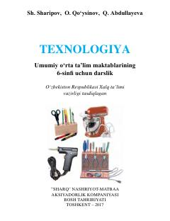

T66-sinf o'quvchilari uchun texnologiya va amaliy mehnat ko'nikmalari darsligi.
Mazkur darslik umumiy o'rta ta'lim maktablarining 6-sinf o'quvchilari uchun mo'ljallangan bo'lib, materialshunoslik, asbob-uskunalar va turli materiallarga, jumladan yog'ochga ishlov berish texnologiyalarini o'rgatadi. O'quvchilarda amaliy mehnat ko'nikmalari, ijodiy yondashuv va kasbiy boshlang'ich bilimlarini shakllantirishga xizmat qiladi.